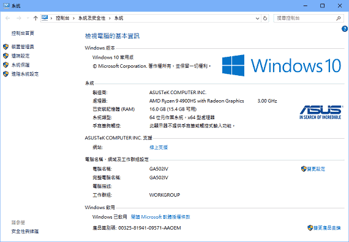

我學 Visual Basic 的情景
五專一年級
我是五專二年級才開始學 Visual Basic 程式設計，但在那之前，我想先談談五專一年級的事。
考上五專時，家裡不只被騙光存款，房子也被騙去抵押貸款借走，所以還負債。但父親還是省吃儉用騰出錢，為我買了一台電腦。因此我對如何讓電腦做更多工作、充分發揮這台電腦的價值很感興趣，決定好好「學」電腦，而不只是「玩」電腦，萌生想學程式設計的念頭。
在學校圖書館找程式設計教學的書時，我想從最簡單的學起，結果挑了用 HTML 語言寫網頁的書。「這不是程式設計吧？」沒錯，但當時我沒上過網際網路，不知道網頁是什麼、不知道網頁跟程式是不一樣的東西，只看書說這個語言很簡單，任何人都學得起來，就借了 HTML 的書回家。
結果，我完全看不懂 HTML 在教什麼，因為我根本沒看過網頁，所以不知道什麼 TITLE 是標題列、BODY 是主體、P 是段落、A 是超鏈結…結果失敗收場，我根本學不起來。所以我不是天才、也沒什麼天份，我是剛開始想學電腦時，連 HTML 都學不起來的人。1
五專二年級
在修「計算機概論」科目時，老師讓我們操作了許多軟體，像是辦公室軟體的 Microsoft Office、網頁設計的 FrontPage、影像處理的 PhotoImpact、以及視窗程式設計的 Visual Basic。
當時我 Visual Basic 學得似懂非懂，卻莫名感到興趣，不甘心沒學會。所以暑假前夕，我到新學友書局買了一本《Microsoft Visual Basic 6.0 專業版自學手冊2》，於是整個暑假都在玩 Visual Basic…軟體當然是盜版，跟同學借大補帖來用的～
我是用認真努力把角色扮演遊戲練強破關的精神，在「玩」Visual Basic！因為我的電腦跑不動最新的遊戲軟體，所以暑假就把 Visual Basic 當電腦遊戲玩了 XDDD
我幻想有天能自己寫遊戲來玩，這樣就不愁沒錢買遊戲！我試著設計一款類似信長野望的日本戰國策略遊戲，名叫《霸勢天下》。遊戲的操作介面做出來了，選擇不同勢力有不同武將和國力。不過我程式設計的程度不夠，不懂演算法與資料結構，所以不知道怎麼設計 AI 讓電腦動，只有空殼子不能玩。
五專三年級
畢竟摸了一整個暑假的 Visual Basic，所以升上三年級要修「程式設計」科目，而且用的是 Visual Basic 時，我已經熟到不行。老師空出一堂課要學生做出來的作業，我通常 5~10 分鐘就交出來了。
我覺得自己程式設計很厲害，便以此為志業了！
殊不知，我厲害的只是操作 Visual Basic 這套軟體而已，事實上程式語言的底子還不夠。後來我想學其它程式語言時，挑的都是 Delphi 和 C++Builder 這種跟 Visual Basic 很像的東西。如果沒有提供視覺化的開發環境，像是 Borland C++，我就不屑去碰，認為那已是被時代淘汰的技術。
現在想來很可笑就是了 XDDD
五專四年級
這一年，我醉心於 Nik Lever 著的《動畫魔法書－使用 Visual Basic》，在 Visual Basic 6.0 使用 SpriteX 控制項寫遊戲，還在 IE 瀏覽器透過 VBScript 用 SpriteX 控制項寫出類似《太空侵略者》的遊戲。為了更進一步，我還學了 DirectX 7 for Visual Basic Type Library，將功能比照 SpriteX 重新包裝，只用五個指令就能處理遊戲畫面。
這階段依然仰賴 RAD 的便利性，覺得程式語言只要能宣告變數和控制流程就夠了，因此 C 語言的指標或 C++ 的物件導向對我來說不是很重要，只熟於傳統結構化程式設計的手法。
但寫遊戲程式的關係，雖然用的是 Visual Basic，卻很少拉工具箱裡的按鈕或標籤來用，因為畫面上的東西都自己找圖貼上去，養成了操作介面與背景系統分離的程式設計思維。
所以，雖然我覺得自己只會 VB 有所不足，未來要學 C/C++ 才敢自稱程式設計師，但無形中還是奠定了解決問題的底子，在我學手敲 Java 和 JavaScript 時多少幫助我堅持下去，不會因為完全解決不了問題挫敗放棄。
學退肄業
出了社會，為了合法接案，就不再碰手上盜版的 Visual Basic 6.0，改下載 JDK 1.3.1 用文字編輯器寫程式3。
習慣用 Visual Basic 寫程式和 Dreamweaver 做網頁的我，一開始也不適應手敲原始碼，有先試過 JBuilder Personal 和 Netscape Composer 之類的免費軟體，才慢慢認命的手敲 Java、HTML、CSS、JavaScript。
我還記得剛開始手敲 HTML 時，先把網頁的標籤結構拆解，一一寫成 JavaScript 函式來呼叫，而不是真的在寫 HTML 格式的網頁。函式名稱還是中文的，像是「段落開始()」「段落結束()」之類。
但不曉得是覺得丟臉，還是那段找不到工作的日子過得辛苦，這段適應期的實際情況，我已經想不起來，只知道曾經有過這段往事～
五專電機工程科微處理機組合語言
唸電機工程的我，可是寫過組合語言的，必修科目呀！
有一整個學期，要在麵包板插線、插燈、插元件，其中最有意思的是 8051 單晶片，要用組合語言寫程式為它設計控制電路。
這門課真的很有意思！寫電腦軟體不過是將某套工具電腦化，寫控制電路可是實體化一個器具出來，我覺得學這個能做出更多有意義的東西！但學這個要不停花材料費，所以「客家人」的我1 想都沒想，繼續寫不用材料費的電腦軟體 XD
雖然程式設計這條路上，我一向強調自己不是科班出身，是自學的，跟唸資訊的人比差得遠了！但程式設計的原始概念，像是基於腳位的思維來設計程式，我有過實際經驗，所以也不全然是沒有底子的門外漢，就機電整合和資訊管理兩個不同領域而已，都接觸得到程式設計，不然我大概也不會想說就學這個混飯吃吧～
我的電腦青春黃金歲月
就跟有些日本人看到棒球，便回想起自己過去高校時期挑戰甲子園的回憶，是多麼青春燦爛一樣，我則是看到 Dreamweaver1，就想起自己專科學校時期，以網頁程式設計為目標的日子，是多麼充滿希望又璀璨。對 Dreamweaver 會有如此感情，世上應該沒幾個吧？
RIA 帶來的憧憬
不曉得是否每個人在學習電腦相關技術時，都有過黃金歲月？
我最美好的青春回憶，是使用 Dreamweaver 3 和 Flash 5 的時期，當時 Macromedia 針對網頁技術所提供的設計工具，讓我對未來有著無比的憧憬，覺得只要我學習開發網頁，就能藉由網路開創出光明璀璨的前景。即使過十多年了，回想那段歲月，還是那樣閃耀著金黃色的光芒～
原來，當時 Macromedia 訴諸名為 RIA 的理念，而 2002 年 5 月 29 日推出的 Macromedia Studio MX，裡面包含 Dreamweaver、Flash、FreeHand、Fireworks、ColdFusion 等軟體，就是用來打造 RIA 的整套工具。雖然當時我還不知道 RIA 這個詞，但整套工具就是給我一種嶄新技術、創新格局的氣息～
2002 年，網頁主要當作平面設計，是用來宣傳活動而已，能夠做到電子商務，讓網站成為網路門市來營運的不多2。所以 Macromedia Studio MX 這用來打造 RIA 的組合，讓即使沒聽過 RIA 的我，也能感受到網頁還有很多可能性等待我去挖掘；我覺得手上有這套工具可以好好發揮的話，就能創造各式奇蹟，不斷改變應用網頁的網路生態。
用 Java 逐夢
不過，出社會想靠電腦技能闖出一片天的我，因為家裡被騙光存款，連我簿子裡的錢也剩不到三萬，所以再三考慮、衡量後，最終並沒有買 Dreamweaver MX 和 Flash MX 來用，改用免費的 JDK，學 Java 程式設計，走 Applet + Servlet 和 HTML & CSS & JavaScript + JSP 路線，後來成為 Java 程式設計員。我這一生最感激的是 Sun Microsystems 讓我免費受用 Java 技術，但要說我學習電腦技術的黃金歲月，印象最深刻、最美好、最憧憬的，還是 Macromedia 那段青春～
所以當 Macromedia 被 Adobe 併購時，我簡直不敢相信，怎麼一家象徵未來的明星產業，會被一家活在過去的老成產業給吞了 XDDD
雖然我並沒有用 Dreamweaver 和 Flash 來發展網頁應用程式，改學不用花錢的手敲 HTML 和 Java 來追逐我的 RIA 夢3，但就是因為 Macromedia 整套軟體讓我看見未來、心生希望，才有動力學 HTML 和 Java。
每當看到 Dreamweaver 的消息，就能想起一段黃金歲月的青春記憶，那種感覺真棒～
CuteFTP HTML Editor 讓我發現純文字編輯器的魅力
發現魅力
習慣用 Visual Basic 或 Dreamweaver 這些 IDE 的我，第一次被純文字編輯器吸引，是用了 CuteFTP 的 HTML Editor！那工作區域清爽、可以通盤掌握內容的感覺，真是一次就上癮。奇怪的是，明明 Dereamweaver 也可以當 HTML 文字編輯器，但就是沒有 CuteFTP 那簡單粗暴的 HTML Editor，能讓我沉浸在文字編輯的世界裡～
但 CuteFTP 是 30 天試用版的商業軟體，所以我開始尋找免費的文字編輯器！那時 PC home Oline 網站有 toget 專區，裡面分門別類整理了各種軟體讓人下載，於是找了 ConTEXT 和 PSPad 來用，這也是我整理《Windows 免費軟體清單》的契機。
從 Big5 轉 Unicode 的關係，改用 Eclipse 和 NetBeans。嫌笨重又改用 jEdit、MadEdit、Notepad++。不喜歡仇中的政治立場，陸續改用 Atom、Visual Studio Code、Sublime Text、RJ TextEd、Geany、Kate、CudaText。沒一個滿意的，最後自己編譯 jEdit 來用，從此想要怎樣的功能，就自己寫出來用。
電腦買來，最重要的不是遊戲軟體，而是文字編輯器！只要有這玩意兒，打開電腦就可以讓我耗上一整天時間。反而打遊戲會累，撐不了兩小時，最讓我享受的，還是在文字編輯器寫文章經營網站、寫網誌抒發心情～
享受日常
要不是被 CuteFTP 的 HTML Editor 驚艷到，從此想著重現一樣的體驗，我可能會是 IDE 派，享受高工作效率的成就，而不是有個關鍵字高亮的文字編輯器就好，享受一字一句手敲程式碼的慢活。
這讓我寫程式是很紓壓的事，而不是累積工作壓力。
用 jEdit 弄個簡單的文字編輯器，寫程式時打開檔案總管切換到存放程式碼的資料夾，編譯程式時點兩下 bat 批次檔…一個 IDE 就通通做到的事，竟然分開來做，真的很蠢！但我就是喜歡這樣慢慢來，享受把時間浪費在程式寫作上的那份悠哉～
窗外灑進九點的陽光，我正開著電腦，寫寫 HTML 網誌、敲敲 JavaScript 程式碼，喝著廉價的三合一即溶咖啡，完成一頁又一頁的生活小篇章。坐久了站起來玩個電動、看個網劇，站累了坐著休息，繼續打開文字編輯器，享受我的程式人生。
我的 JavaScript 歷程
剛開始我敲的是 VBScript
在我用 Visual Basic 寫程式時，是用 VBScript 寫網頁腳本程式，因為可以掛載 ActiveX 控制項！不僅能驅使作業系統做更多不該是網頁瀏覽器該做的事，以這種做法寫程式，往往能把寫在 Visual Basic 的程式碼，直接搬到 VBScript 再稍微修改一下就好，不用重頭寫起。
這樣的「動態網頁（好懷念的詞）」是 IE only，甚至 ActiveX 控制項的關係還 Windows only。
那時家裡沒裝網路，沒在上網的我，並不關心上網的人會用不同的作業系統、不同的網頁瀏覽器，只想把技術學起來。
後來投入伺服端網頁程式設計，覺得相容性很重要，才改用 Netscape Navigator 和 Internet Explorer 都支援的 JavaScript。
怎麼寫都不相容的 JavaScript
在我用 JDK 1.4 寫程式時，滿嘴物件導向的我1，覺得過於寬鬆、不夠嚴謹的 JavaScript 是語法非常糟糕的程式語言。
我寧可研究怎麼寫笨重的 Applet 程式，也不想用感覺很破爛的 JavaScript 寫動態網頁程式。
即使不提語言本身，JavaScript 在實務上的體驗也很糟糕！那時可沒 jQuery 這好用的神器，要相容 Netscape Navigator 和 Internet Explorer 是很累人的事，時間都花在處理兩邊不相容的瑣碎問題，而不是放手寫 JavaScript 程式。
所以我根本不想寫 JavaScript 程式。用 VBScript 時很喜歡寫一堆東西出來，寫 JavaScript 時我只覺得做什麼都是多餘的…今天能執行的程式，幾個月後可能又被限制語法，無法在新版瀏覽器執行。
ECMAScript 5 激起我的學習欲望
jQuery 大為流行時，我並沒有用它來解決網頁瀏覽器相容性的問題，因為我直接選邊站：「放棄 IE。」那時 IE6 是款擺爛的網頁瀏覽器，我決定不再相容 IE，只相容 Firefox 就好，甚至向使用者宣導拒用 IE，因為 Microsoft 無視 W3C 所制定 HTML 標準，堅持搞自己的 HTML 標準，企圖讓網頁只能在 Windows 正常顯示，非常惡劣。只為 Firefox 放手寫 JavaScript 程式時，我總算感受到這門語言多麼歡樂，透過 DOM 控制整個頁面真是樂趣十足！
沒多久，我看到許多人講到 first-class function 的觀念和 prototype 的好處：「這什麼？我買好幾本 JavaScript 的書來看了，怎麼從沒介紹過 JavaScript 有這些東西！」可能很難想像，但我手上的 JavaScript 舊書，都沒提過這些。2
不甘心自己竟然有沒學到的東西，我買了幾本 O'Reilly 的書繼續學習 JavaScript，了解到不該用 Java 物件導向程式設計的角度批評 JavaScript 語法糟糕，JavaScript 有自己的開發手法，是我自己不懂。
於是我開始積極用這糟糕的語言寫應用程式看看，想讓自己變懂～
我學了其他很多招式，但只有 HTML5 Webapps 是我大絕招～
不知不覺，我手上的 Java application 大多移植成 Web application 來用，免於九宮鍵的計算機也好、日文輸入法也好、球員卡牌遊戲也好、等吃泡麵的計時器也好，能在網頁瀏覽器跑，就不會在 CLI 用 java.exe 執行。
就這樣寫了十多年的 JavaScript 程式，在了解與慣用 JavaScript 這門動態表述語言後，確實程式碼寫起來效率之高，要比物件導向程式設計的 Java 好！可以像 JavaScript 這樣寫，就不想用 Java 的方式去寫。
但我不會就此吹捧 JavaScript 是更好的程式語言！因為寫到後來，我走的路，又開始跟高手、專家們不一樣！我不想為了規避問題，避用 JavaScript 為人詬病的程式寫法，而是深入了解其運作原理、掌握適當的使用場合，放手去用那些可以讓程式碼更簡潔、更直覺的寫法。像是寫了幾年的 ECMAScript 6 後，我轉為擁抱 class 擁抱 new，不再去寫 object literal、Object.create()、prototype 那套程式。
所以現在我所敲的 JavaScript 程式，充滿它糟糕的一面。因為我覺得 JavaScript 真正比 Java 更好的地方，不在於它「剔除糟糕部分就會優良」的一面，而是它糟糕的一面本來就是一種優良。雖然 ECMAScript 推出新規範再次解決問題時我會感到振奮，但我體會更深的是，Brendan Eich 當初為什麼這樣設計 JavaScript，然後盡量還原它網頁瀏覽器表述語言的應用場合，把程式碼寫得少一點，去用那樣的設計～
最簡單好用的類 C 語言
就要 2024 年了！在 Ruby、Python、Go、Kotlin、TypeScript…這麼多人見人愛的程式語言相繼出現，我非但未曾愛上這些語言，反而更加深愛 JavaScript 了！
我意識到，JavaScript 是類 C 語言中最簡單好用的！即使網頁瀏覽器沒落了、後端 Node.js 被其他新的應用框架淘汰了，JavaScript 也可能不會就此消失，而是被移植到新的應用平台上。畢竟，就是有人像我一樣，偏好 {} 和 ; 而不喜歡 indent 和 end，JavaScript 是這種偏好的語言中最好敲程式碼的！既喜歡 C、C++、Java 這種程式碼，卻又不想被靜態型別語法拖慢敲程式碼速度的我們，會把 JavaScript 的語法移植到方方面面去才對～
相比 Python、Go 和 TypeScript 的語法嚴謹、精妙，JavaScript 語法確實糊塗、糟糕，但也就是這麼糊塗、如此糟糕，讓 JavaScript 程式碼敲起來爽快無比，真是欲罷不能…除非你跟進它的糊塗與糟糕，不然是無法跟它一樣爽快無比的！
因此，對偏好類 C 語言的我，JavaScript 真是充滿魅力！我想一輩子都用 JavaScript 來爽敲類 C 語言程式碼，無論 Python 和 TypeScript 還有其他語言多好、多棒，我眼裡只有 JavaScript 了 (´▽`ʃ💗ƪ)
我 C 語言算熟但是不強
在拋棄 Java 後，C 語言一度是我的主力！
我非常喜歡 C 語言用指標搞定一切的程式設計手法，過去熱衷萬事萬物皆物件的我，還曾探究萬事萬物皆指標的可行性～
我自認為還算熟練 C 語言，不過實際設計程式時，我完成任務的速度很慢，就像數學試題，雖然知道怎麼解，但我解題速度很慢。數學強的人，解題速度都很快，所以寫 C 程式沒辦法跟別人一樣快的我，自認 C 語言不強，後來也改用能讓我快速解題的 Python。
但是用 C 語言寫程式，有著不同於 Java、JavaScript、Python 的樂趣，那種感覺就像玩了一場數獨遊戲一樣，其樂無比！所以我可沒荒廢 C 語言，只是沒在工作上當主力語言。
我喜歡 C 語言，但不喜歡 C++
如題，因為它只關心自己是不是夠力的物件導向程式語言，而不關心該怎樣用物件導向去開發程式。
反觀 Java 和 C#，各有自己一套物件導向開發理論，並依此為中心思想去架構開發資源，哪邊需要用槌子就給槌子，哪邊需要用鋸子就給鋸子。C++ 沒有這種中心思想，只想著打造各種槌子，鐵鎚、木槌、黃金鎚、雷神之鎚，於是你選擇用雷神之鎚去鋸東西…
我為此特地去看《C++ 沉思錄》，想了解 C++ 的中心思想，結果更加覺得 C++ 沒有中心思想。應該說，C++ 是很有想法的程式語言，每次看 Bjarne Stroustrup 被訪談的報導都是一大享受。但也就是很有想法，因此不拘泥俗套，也就不奉行什麼中心思想，只管將 C++ 打造成夠力的物件導向程式語言，至於怎樣才是物件導向程式設計，由使用 C++ 的人自己去定義！
但選擇物件導向就是為了開發規模不小的軟體，因此物件導向程式設計才是重點，既然有其他做得更好的物件導向程式語言，我便不想用開發體驗顯得糟糕的 C++～
我的 Python 二三事
為什麼當初我學 Java 而不是 Python
因為當時我並不知道有 Python，我只知道 C++、VB.NET、C#、Java，然後選擇了 Java。
甚至我知道有 Ruby 這門程式語言時，還不知道 Python 的存在。
現在讓我選的話，因為我寫程式只是想讓電腦做更多事，所以會選 Python，然後覺得這樣就夠了，而無視 Java 與其它語言。
但不能說過去我選錯語言，正因為當年我選了 Java 這牛刀，所以只想殺雞的我又學了動態語言的 JavaScript 快寫程式，以及用 C 語言為作業系統編譯指令，最後用 Python 搞定一切…都學都用沒什麼不好。
為什麼選 Python 時不選 Ruby
Ruby 先進到像外星人的科技，讓我無法有足夠的知識明白別人寫出來的 Ruby 程式在幹什麼。若說 Perl 程式感覺像貓爬過鍵盤留下的文字，雖然完全看不懂，但還覺得滑稽、可愛，那 Ruby 程式感覺就不是地球生物留下的訊息，雖然猜得出來，但有某種高等生物在睥睨我的感覺。
我很喜歡 Ruby 函式不用 return 就能傳回值、函式隨後可接匿名區塊、呼叫函式不用括號等語法，其實用 Ruby 寫程式是很美妙的感受。只是看別人很刁鑽地寫出 Ruby 程式時，總會楞一下這有看沒有懂的敘述在做什麼。別說高手的程式，就連直譯器內附 lib 資料夾裡的 *.rb 原始檔，每次我翻開來看時1，都有這種被外星人睥睨的感受 XDDD
如果哪天需要寫物件導向的程式，我再選擇 Ruby。因為選 Python 的原因，可說是想找個不那麼物件導向的語言來快寫程式，畢竟 Java 用膩想換個不一樣的～
我早晚會想重溫物件導向的美好，屆時就會選擇 Ruby，享受快寫物件導向程式設計的樂趣。因為 Python 的物件導向又醜又蠢，而有些優美的文句，不靠漂亮的物件導向寫法，是表現不出來的。事實上，在寫 Python 時，我只會拿現成的物件來用，不會把程式寫成物件來用。
為什麼後來不繼續用 Python？
1) 物件導向程式設計的類別很醜。
2) Lambda expressions 只能一行很爛。
3) PEP 8 和 Pythonic 跟「入教者都得守的門規」一樣讓我反感。
我覺得寫程式應該跟寫作一樣，能表達自己的個性、展現獨特的風格。而活像要寫八股文的 Python，從一開始就不是我的菜。明明很好用，但我始終無法打從心底愛上這門語言。
其中「用 4 個空格縮排，不要用 tab 鍵。」「換行，使一行不超過 79 個字元。」更是看了整個厭惡到不行！要用怎樣 coding style 是別人的事，規定出來做什麼？正確的編排方式是「不要變來變去」，而不是使用某套絕對性的編排風格，不照做就得被批評！
話說回來，為了汰除 Python 2 舊弊，打掉再來的 Python 3，發展到 3.10 版也一樣變成同一件事有多種做法了！最要命的，是賦予更多符號語法糖，而且是沒學到就完全看不懂那種，可讀性越來越低、越來越不平易近人。裡面不乏過度技巧化的語法，可以寫出跟外星文沒兩樣的程式，更是悖離 Python 的初衷。再這樣發展下去，我看 Python 在未來也會變成又難寫、又難讀的程式語言…我想我不會後悔沒繼續用 Python。
PEP 8 是正確的編排方式？
只要編排程式碼的方式是有規矩可循，而不是變來變去，讓閱讀的人能夠適應，就是好的編排風格。
其實團隊達成協議該怎樣做即可，而不是要求非得使用程式語言官方推薦的風格才行。因為，團隊有時候會用多種程式語言來開發系統，每種語言的語法架構不一樣，所以會有各自適合自己的不一樣編排風格，因此團隊裡並不會強制某套絕對性的編排風格，而是切換不同的編排風格寫不同語言，這樣程式才會更容易撰寫與管理。
PEP 8 明文規範的關係，使得大多數人認為非得怎樣怎樣，才是正確的編排方式，否則就批評程式碼寫得很糟糕，這我非常不能苟同！
能不能適應別人的程式碼編排風格，也是程式碼編排風格的重要議題！如果對編排的觀念，只是「要求看到自己想看到的程式碼編排方式」，卻不願「要求自己適應看不習慣的編排風格」，那絕對不是好的行事風格，反而非常的糟糕～
在流行動態語言的時代，我繼續用 Java 的原因…
因為我比較喜歡長得像 C 的語言，所以不怎麼愛用 Ruby 和 Python 語言；即使這些語言更進步，我還是喜歡繼續用 Java 寫程式～
另外，我還不覺得自己已經會用 Java 漂亮的開發軟體，所以在學會之前不想放棄，否則就這樣離開 Java 難免覺得人生留下遺憾。
很多人用 Ruby 和 Python 來批評 Java 的強型別和寫法繁瑣，其實那正是物件導向程式設計的特點，開發大型專案時，就是要過度設計，為防錯甚至防呆做種種布局！確實在寫腳本程式時，那些過度設計很蠢，但是在做系統整合時，就是要嚴格規範增刪查改的流程，活像公家機關什麼事都要跑公文一樣…但你不能因為自己在家生活就批評跑公文這件事做過頭，在公家機關的立場，就是要建立一套嚴謹的批准流程，防止行政疏失。
自找麻煩不是一種過錯，就是有少數場合，需要這樣做事，做好把關。
Ruby 和 Python 有他適用的場合，但沒辦法像物件導向程式設計的 Java 語言那樣，嚴密規範程式設計團隊該怎樣實現案例、不能怎樣實現案例。所以我不會因為 Java 那些「缺點」而吹捧 Ruby 和 Python 的「優點」，場合不對的話，那些優點其實是缺點～
從不屑 C# 到後來使用它
C# 剛推出時我有學過
2001 年，在學 Java 語言之前，我先學的其實是 C#。
那時有本書《ASP.NET 網頁設計實務》，內附四張 Visual Studio .NET Beta 2 安裝光碟，居然才賣 269 元，於是就買回家用了 XDDD
我還先後買了兩本 C# 語法教學的書，先買一本薄的草率入門，看完又買一本厚的正式學習。然而，在 Visual Studio .NET 寫程式的關係，我沿用 Visual Basic 的觀念和習慣在學習，基本上沒什麼長進，不懂演算法與資料結構、也不懂物件導向設計模式，就只是換套工具寫程式而已。
後來因為寫 JSP 的話，有免費的 Tomcat 可用，而 ASP.NET 的 IIS 要跟 Windows Server 2003 綁一起，否則功能受限，更別說我總不能真的用 Beta 2 版的開發工具寫程式接案吧？所以我 C# 沒學到什麼，就跳 Java 了：「沒錢又想寫程式接案的我，決定在 Linux 用 JDK 開拓人生～」
不屑使用這種 Windows only 的程式語言
幾年後，身為 Java 程式設計師的我，認為 C# 等於 .NET Framework 等於 Windows 等於 money，便致力於推廣 Linux + Java + Apache，任何部分都可以免費替換其它更好的方案，不讓自己的技術被 Microsoft 產品綁死。
我很不屑 C# 這個程式語言，甚至有強烈的反 C# 心態。
這時我不到 30 歲，正是氣盛凌人的年紀，心裡覺得不屑，自然嘴裡少不了批評，我對 C# 只有醜話和帶酸。
即使後來我知道 C# 有更先進的物件導向機制，也寧可繼續用落後的 Java。
跨平台且開源的 .NET Core 讓我改觀
.NET Core 的出現，讓我開始接受 C#，這是跨平台的 .NET，而且是開放原始碼專案！這時的 Oracle 不是告人侵犯 Java 版權，就是發函要求支付 Oracle JDK 非一般用途的費用，反而 Microsoft 的 .NET Framework 和 .NET Core 免費商轉、從不收錢，逃離 Java 改投 .NET 蔚為趨勢～
到了 .NET 5，.NET Framework 不再更新，往後只會發展 .NET Core，我覺得這是踏入 .NET 的好時機，而開始用 C# 寫程式。這一寫不得了，有夠像我生涯用了十幾年的 Java，超順手的，不知不覺用上癮，就把 Python 刪掉，改用 C# 寫 .NET 程式了 XD
但我不怎麼欣賞 C# 這門語言，它發展到後來太複雜了！尤其用一字多義（如 new 和 using）和片語（如 private protected 和 record struct）的方式增強語言功能，是我非常不樂見的設計，這會讓指令的表達力降低，得額外費心釐清前後分詞的性質，才能確認說要表達的是什麼設計。手上用著功能豐富的 C#，心裡卻懷念起語法簡約的 Java～
然而，在 Windows 作業系統開發桌面應用程式時，.NET Framework 確實是更加完善的解決方案，像是開箱即用1 的 API、編譯出來的是 *.exe 可執行檔，這些體驗都比 Java 來得好！所以，雖然 C# 不是我的菜，Java 才是，我還是決定用 C# 寫 .NET Framework 程式。用喜歡的語言寫程式，跟用更完善的方案做開發，我這次選擇了後者：「把事情做得更好，而不是用自己喜歡的方式做事。」
多學多用好像沒什麼不好
就這樣，在用了三年後，我能夠…
用 .NET Framework 在 Windows 寫 application
用 Java 在 Linux 寫 application
用 Node.js 在後端完善前端的 HTML5 寫 web application
用 NW.js 基於 HTML5 寫 desktop application
視情況輪番上陣，很少因為拋棄哪項技術轉投別項，就再也派不上用場的情況。只有 Python 和 PHP 沒在用了，C 本來就是拿來益智的，而不是拿來用的。
若要選一個最喜歡的，那其實還是 Java，而不是 .NET！Java 能在 Linux 和 Windows 通包 GUI application、CLI program、HTTP listener 等工作，有 Java 就夠了，.NET、Node.js、NW.js 只是能把特定事情做得更好，沒有也無所謂～
其實 .NET Framework 沒當初所想的那麼好
它並沒有「把事情做得更好」，反而經常是所有程式設計方案中唯一無法完成工作的！
.NET Framework 編譯出來的程式經常被 Windows 以「存取被拒」或「由於另一個處理序正在使用檔案所以無法存取該檔案」為由拒絕執行，別說同樣功能的程式改用其它語言去寫不會有這問題，一模一樣的程式碼改用 .NET Core 執行也沒有問題。.NET Framework 開發出來的程式，經常卡在作業系統不允許執行，久了很讓人很厭惡。你想想，問題不是出在程式碼寫錯，而是作業系統不允許在某些情況下執行 API 提供的功能，那不管程式碼怎麼去改都沒用，Windows 10 就是不讓 .NET Framework 正常工作，這叫能把事情做得更好？我又一次自己打臉自己了 (￣ε(#￣)
由於經常得搭配其他程式設計方案來繞過作業系統不允許執行的問題，很難將 .NET Framework 視為主力，會覺得直接用其他程式設計方案就好。而我經常搭配的程式解決方案是 Java，所以再次成為我的主力！
雖然 .NET Core 沒有 .NET Framework 這些問題，理應用它繼續 .NET 技術！但我不喜歡它只能照 template 的檔案結構去 build 產品的風格，我喜歡照自己風格 compile 就好。加上 .NET 沒有離線文件可以下載，所以看來看去，還是 Java 適合我…在這 Java 顯得落後的時代，我知道我可以用它輕易搞定 GUI 和 HTTP 程式設計的工作，好用得很！
我不是 git 高手，我是 git 肉腳。
我對 Git 了解得不夠深入，加上我不是腦袋很清楚的人，整天都在恍神，所以我不敢全面把 Git 用在工作上。因為我明白自己早晚會出包，下錯設定做錯事。
Git 的分散式版本控制觀念有點複雜，加上指令和參數定義得太粗陋，組合起來所表達的意思不清不楚，無法讓我像 Mercurial 一樣清楚意識到自己正要幹嘛，所以每次都用得戰戰競競。在沒看到結果前，其實我不保證自己剛剛做的對不對～
我總覺得把 Git 全部功能都用上，會讓我工作上產生或大或小的麻煩，增加處理問題的成本，甚至會有那麼一天帶來毀滅性災害！我只有用到 Git 部分的功能在工作上，像是為程式碼建立版本歷史、還原到過去修改的狀態、用不同分支開發各個新功能穩定後才合併…其他的我盡量不去碰，因為我不是那麼聰明絕頂的人，沒本事像高手那樣靈活操作 Git。
我都是事先把 git 功能測試無誤後，寫死在不同批次檔，再依任務階段調用，絕不會手敲 git 指令去做這些事。我傾向綁住自己手腳只做固定不變的事，不讓自己隨意操作 git 做更多事…如果你也是不太懂 Git、不太敢用 Git 的人，你不寂寞，至少還有我作陪 :)
我也曾懷疑自己沒有能耐，但我不曾想過放棄。
因為不是科班出身1，沒打夠底子，一切都靠自學，所以二十多歲、乃至才剛三十出頭的我，寫程式遇到困難，就會懷疑自己沒有那個能耐。
雖然如此，我從沒想過放棄程式設計！誰規定沒有能耐就不能繼續寫程式？當不了大師，我可以小小當個程式設計師，當不了程式設計師，我可以默默當個愛好者，總之我就是要繼續寫程式！寫程式是開心的事，為什麼當不了高手、混不到飯吃，就要放棄？
在寫了上百個大大小小的程式來用2，有空就打打底子學資料結構和演算法、從架構面深入計算機概論，還不是讓我精通了程式設計！我可以不用 IDE，直接在記事本手敲 Java Swing、HTML5 Webapp、.NET CLI/CGI 寫各種程式。Python 或 AutoHotKey 到我手上，就像獲賜魯班巧具一樣，四處敲敲打打，把用起來不怎樣的 Windows 打造得好用到不行！
我可以不厲害，但我不想因此放棄程式設計這門樂趣。就像我打電動也不厲害，超級瑪莉兄弟、魂斗羅、火之鳥都沒辦法破關，但我從未想過放棄打電動的樂趣。共勉之～
典型語言的主張
物件導向程式語言
我希望我寫的物件導向程式，給人的感覺是簡陋、笨拙。
看到的人會覺得寫的人沒什麼了不起，認為自己可以寫得比我更好，而自信滿滿地修改程式碼。如果我的程式碼看了以後不會有想改的念頭、甚至不敢改，那就是十足失敗的作品！
為了讓人更容易看懂，程式碼應該每一行只做一件事，一看就清楚明白在做什麼。用花招把多行程式串成一行，然後得花好幾分鐘剖析程式碼、理解程式碼，並不是高尚的寫法。如果節省程式碼行數會增加理解程式碼的時間，那還不如笨拙地多寫十行。
程式碼不是藝術，也不是詩文集。程式碼應該像工業配線那樣毫無美感、但只差一兩條線還沒接的半成品，讓人看了會想進一步完成它。完成它的人，自然會感受到這玩意兒的美好～
表述語言
不同於把物件導向程式碼寫得笨拙，表述語言 (scripting language) 則是充分發揮語法特性，簡化程式碼，會更加簡單易懂！
因為表述語言通常是特定領域專用的語言，領域本身就是已抽象出來的概念，所有程式碼都是為了操作領域的功能而來，溝通的對象很清楚，也就不需要為了淺顯易懂、讓人了解描述的對象是誰，而故意寫得笨拙。
物件導向往往是用來開發「特定領域」的，要描述的不只對象，還有事物，使得程式碼所要抽象的層次，會是多維度、不同次元的！這種情景是立體的，想直接呈現出來除非畫圖，若要用程式碼這樣的文字描述出來，就應該平舖直述，把立體的情境攤平在字裡行間，讓閱讀程式碼的人身歷其境～
所以寫表述語言我會充分發揮語法特性，讓程式碼簡明扼要。寫物件導向程式語言我會平舖直述，讓程式碼淺顯易懂。
我的程式碼風格
命名風格
我下指令命令電腦做事，要比開發應用程式來得多，所以為了速敲程式碼，我是那種用英文字母 a b c 來命名的人，一來我不能浪費時間想合適的名稱，二來這種用過即丟的程式也沒必要。
但程式碼總要幾番修正才能正確做事，識別字還是要有可讀性，才方便去抓錯誤，所以就算只是英文字母，我也有一套命名規則：
a b c d e 全域變數
f g h i j k 函數和裡面的變數
L M 常數、式子、模組名稱
n o p q 迴圈用的變數
r s t u v w 區塊裡的變數
x y z 參數
大寫 類別名稱
數字 多個函式
_ 匿名、不命名
表現出來的大概式子：
var a,b,c,d,e
f(x,y,z){
g h i j k
}
L{}
M{}
for(n,o,p,q){
r s t u v w
}
var m1=new M()
var m2=new M()
雖然我用這些沒有意義的名稱會被嫌惡，但就像數學公式一樣，其實還是有意義的～
但也只用在短程式，上百行程式還是要正式命名，不然沒辦法在頁首頁尾跳轉之間掌握程式碼脈絡。但我命名不講究精確，能有效牢記、起辨識作用就好！因為我不是生長在使用英語的國家，不可能知道用哪些單字更適合，為此放下程式設計的工作，花時間去翻字典、上網搜尋並不叫敬業，叫浪費時間。反正就是識別字（identifier），能起識別作用就好1。
補充式子：
f1(r,s,t,u,v,w,x,y,z){}
f2(...x){
x.forEach((n,o,p)=>{
r s t u v w
p[o]=n
})
}
編寫風格
受 Java 預設載入 java.lang 的影響，我用 C# 10 的「全域 using 指示詞」製作一份預設載入清單。搭配 C# 9 的「最上層陳述式」，可以打造出像在寫表述語言一樣爽度的環境。原本 C# 不是我的菜，但這兩個功能讓我愛上它～
在使用空行隔開程式碼時，Allman 風格顯得上下均勻、對稱，我非常喜歡！但它用在 lambda 很醜，而且有時候整頁都被括號占滿，剩沒幾行實際的程式，這挺蠢的，所以我使用 K&R 風格，只在類別和函式名稱對左括號另起新行，其他程式一律左括號緊黏在後。
陣列、物件、字典的「初始設定式」改用 Lisp 風格，好將它集中成一塊，理由是它並非多行程式敘述（區塊），而是一整筆資料（式子）。這麼做能強化視覺效果，關注到這一塊是資料集合，避免徒勞心力地用處理流程的心態去關注它。
我當空行是一種註解，而不是整齊美觀的編排，所以盡量用空行隔開程式碼，它跟註解一樣好用，不用怕程式碼因此支離破碎顯得凌亂。
C# 9 的「建立具目標類型的物件」是符合強型別風格卻又更簡短的語法，我會在物件導向程式設計的場合用它取代弱型別風格的 var！但如果是隨手寫寫腳本程式，則不想把時間浪費在型別檢查，而一路用 var 到底，以消除型別為第一要務。
我不因 IDE 或文字編輯器的先進功能來決定程式寫法！比如 Visual Studio Code 已經提供什麼功能了，所以就該怎樣怎樣、不該再怎樣怎樣。哪天在沒 Visual Studio Code 可用的環境時，才驚覺從未見過如此糟糕的程式碼。要寫出用「記事本」看也頗具可讀性的程式碼，而不是只適用某工具的程式寫法～
我打從心底認為每行不超過 80 個字是反模式！嫌程式碼太長超過螢幕寬度，可以切換 word wrap。為了不超過 80 個字，反而處處破壞程式碼縮排原則，難看死了 (ﾟДﾟ*)ﾉ
我對 K&R 風格左括號不一致的看法
類別、函式就意義上來說，只是構成了程式的階層而已，並不是實際在跑什麼程式，因此在編排上，只要分得出階層性就好，不需要複雜的編排原則，就算類別裡的屬性和方法之間不用空行隔開，也能分得出來。不像實際在跑的程式，若上下文語意聯繫不起來，會看不懂在做什麼，為了表達程式與程式之間各種不同的關聯性，編排原則就比較複雜，像程式之間不用空行隔開，就容易混在一起，不知道這一行是接上一段的程式還是下一段的程式，但在不必要隔開的地方加入空行，又會錯誤解讀下一行程式的用意。
因此，類別和函式的左括號做法跟函式裡面實際在跑的程式不一致，在意義上沒什麼不妥，兩者的關係就好比標題和內文，不妨將另起新行視為對標題加粗的效果，標題有標題自己的設計模式，內文有內文自己的設計模式，兩者沒能保持一致不是什麼多大的問題，本來就是一強一弱更能凸顯標題和內文。
左括號單獨一行凸顯階層性，左括號緊黏句尾凸顯關聯性，有著一強一弱的效果！
最後舉個例子吧！文字編輯器有程式碼摺疊 (fold) 的功能，你會想把類別和函式通通摺疊起來，要修改時再展開，但你不會想把 if 和 for 通通摺疊起來，這就是兩者在意義上本來就不一致的最好例子。可以摺疊的，和不需要摺疊的，左括號位置不一樣，其實說得過去，對吧！
我的開發手法
由於我程式生涯奠基於 Java，受 Java 語言機制影響深遠，所以我的開發手法很可笑，我每寫一個很小區塊的程式功能，就會編譯、測試、重構，完成後就歸檔為 *.class，待以後動態繫結執行。到最後我的 application 再用這一大堆螺絲般的 *.class 組立而成，組立過程看有哪些螺絲不合用，就重新設計一個螺絲來換：「不是修改不合用的程式碼，而是重新寫一個換掉。」畢竟只是一小區塊的程式碼而已。
我通常沒有排程表，大多功能在我眼裡都是螺絲，先做哪一種尺寸規格的螺絲隨我方便。我只管我做出來的是不是螺絲就好，只要我做出來的是螺絲，就不用擔心哪一個螺絲設計不良會讓組立短路或爆炸，設計不良就再做另一個螺絲裝上去試試看～
螺絲只是用來鎖緊零件用的，而零件呢，則是官方或第三方給的程式庫。我自認為是螺絲業者，所以我的工作，就是針對零件設計合乎尺寸規格的螺絲，不去做零件，這樣我就能保證組立時用的是別人掛保證的零件，自己粗製濫造、偷工減料做的，則是做得再怎麼糟糕也不會造成組立短路或爆炸的螺絲。
我不認為自己敏捷1，我頭腦很清楚地照著瀑布式開發推進我的專案，只是我能干涉瀑布順流速度的快慢而已…甚至逆流。我遵循瀑布式開發，像紫龍努力在五老峰對著瀑布練好廬山昇龍霸一樣 💪 既然我的絕招是廬山昇龍霸，就不需要去想著天馬流星拳 👊
我的電腦配置與操作環境
桌面不放應用程式捷徑，只放資料夾和檔案，有檔案表示手上工作沒做完。
應用程式捷徑收納在開始選單，常用的放下面，縮短滑鼠移動距離。
文字編輯器簡單一點，程式碼敲慢一點，是我享受程式設計的方式～

電腦是 ROG Zephyrus G15 GA502IV，外接 27 吋螢幕。
為何我用 jEdit 寫程式
我不喜歡笨重的 IDE，所以自己魔改輕巧的 jEdit 來用。
jEdit 有強效的文字處理性能，能輕鬆搜尋和取代大量檔案的文字內容。
jEdit 還有極高的客製化能力，能自己量身打造想要的功能！像是語法上色部分，當語言新增「多行字串」和「字串插值」時，我可以自己到 modes 裡改 *.xml 語法結構，不用等別人更新又遲遲等不到。軟體功能方面，我想要什麼方便的玩意兒，就自己到 macros 裡寫 *.bsh 腳本程式調用 Java API 來實現，寫完設個快捷鍵，就有我要的功能了。反過來，如果有我不想要的功能，像是強制在 settings-backup 備份組態檔，那就修改原始碼，編譯出自己的版本來用。
這就是為何有更好的1 VS Code、Kate、CudaText…不用，偏偏用 jEdit 寫程式。jEdit 沒有 IDE 完善的智慧提示，沒辦法讓我更快完成開發工作，但它能量身訂做成我最順手的文字編輯器，方便我慢慢寫程式，慢比快更有效率，因此 jEdit 是我最好的選擇～
BASIC 語言比你想像的還要意義深遠，一點也不爛～
進入 20 世紀 90 年代，隨著 486 等級電腦普及，已經承擔得起 C 編譯環境的建置，早已名震江湖的 C 語言盛行起來。Basic 因此被視為語法功能不強、執行效率不高的爛程式語言：「要學就學程式碼寫得更巧、程式跑得更順的 C 語言！」
但是對經歷過 APPLE II 與 IBM PC 的人來說，BASIC 程式語言的意義卻非常深遠。因為這些電腦都內建 BASIC 程式語言1，每個人就像現在或多或少會寫一些 MS-DOS 批次檔來處理檔案一樣，會以 BASIC 寫些程式讓電腦動作。甚至不少人熱心到有空就以 BASIC 製作一些軟體與遊戲，然後將原始碼發表出來給大家輸入使用。
或許 APPLE II 與 IBM PC 跟 Richard Stallman 用的 UNIX 電腦是完全不同等級的「玩具」，但這個時代使用這些玩具的人，其實很能體會 Richard Stallman 畢生保護原始碼的分享是怎樣美好的事～
BASIC 是許多 APPLE II 與 IBM PC 電腦高度使用者，曾經投入學習的技術，而它基本上像批次檔一樣易學，只是東西更多，容易讓人一步接著一步學下去，總有為數不少擅長以 BASIC 邏輯思考來設計電腦做更多工作的進階使用者。
至於 BASIC 的語法功能不強，是因為比起靈活寫意的 C 語言來講過於死板。但後來認真檢討過去這段往事，倒也開始懷念其實是 BASIC 比 C 較接近「自然語言」一點，所以寫起來顯得囉嗦的關係。然而，當時較接近自然語言的 BASIC 也總是以「容易學習」為優點，成為每個踏入程式設計領域時普遍建議學習的第一個語言。
或許 BASIC 再也不如 C 和 Java，也不再成為大家推薦學習程式設計的第一個語言。但過往封存於美好年代的象徵意義，卻不是 C 和 Java 所能取代、甚至根本不能比擬的。
C 語言和 C++ 在看問題時有截然不同的本質
當你總是將問題複雜化，卻沾沾自喜這樣很專業，很遺憾，你走錯路了！
把問題簡單化或複雜化
設計程式時，主要工作，是將需求化為問題來解決！解決手法有兩門：
一門是將程式結構和需求問題簡單化。
一門是將程式結構和需求問題複雜化。
我是屬於把問題簡化的門派，所以我喜歡傳統結構化程式設計且語法單調的 C 語言。像 Hello world，不管怎麼想炫技，都差不多是跟原本沒兩樣的程式結構，不會複雜到哪裡去。也因此，沒什麼花樣可搞的 C 語言，會讓你傾向把問題簡單化，而不是複雜化！
C++ 不一樣，它有世上最剽悍的語法功能，再加上各種物件導向學說理論，可以把好好一個 Hello world 寫成錯綜複雜的程式結構！你不懂那個語法、不懂那套理論，抱歉，你很可能費盡心思抽絲剝繭了半小時，還不知道那是 Hello world。使用 C++ 會想炫技，寫出高深莫測的程式結構，一副自己最懂物件導向比誰都專業，讓人傾向把問題複雜化。
程式設計的目的是解決需求問題而不是製造技術問題
C 語言和 C++ 最有趣的就在這裡，它們看待問題本質的方式完全不一樣！只要在這兩門語言的差異中好好推敲、觀察，你就會得到比別人豐富十年的經驗談。
但最終，程式設計的重點是解決問題，而不是製造問題，你不該把程式結構複雜化到很難處理，變成另一個需要解決的問題！當你不只要解決需求問題，還要解決複雜程式結構的問題，就會萌生不想維護下去的念頭…物件導向程式設計很容易把程式結構這樣複雜化！
如果你在物件導向的路上，先是突飛猛進，到後來卻無法突破，很簡單，看看 C 語言怎樣把問題簡單化，再檢視你怎樣把問題複雜化，就能重新發現物件導向的新思路，成功突破瓶頸，提升層次！
複雜化是很好的工具、高明的手段，但別忘了你之所以使用工具和施展手段的目的是什麼？解決問題不是嗎！在「一時」無法將問題簡單化時，先用複雜化含糊過去、應付了事，這樣的話確實高招，也推薦這樣做事！但不該「時時」想著將問題複雜化、程式結構最大化，這樣就不高明了～
物件導向程式設計很容易把程式結構複雜化
如題，尤其是當你唾棄繼承和多型，秉持物件導向設計原則，每段程式碼看起來都是清爽舒服的 clean code，但整體結構呢？
通常這種程式組織起來並沒有中心思路，很難理解為什麼是這樣關聯起來的！往往研究這種物件組織的脈絡，要比動手修改 dirty code 困難：「它髒的不是寫法，而是想法。」
傳統結構化程式設計沒有這問題，它很容易產生髒的程式寫法沒錯，但不容易產生髒的政治想法…是的，當你治理物件時，一切就跟政治沒兩樣。
所以物件導向程式設計就跟政治一樣髒？不，治理物件才會！如果你回歸 C++ 使用類別來開發程式的初衷，不要想著用一套理論去治理什麼，那物件導向程式設計就會是比傳統結構化程式設計更有開發效率的解決方案，美好得很，一點也不髒～
成功突破瓶頸提升層次
在 C++ 這種用類別來實現物件導向的程式語言，擁抱繼承和多型才能把問題簡單化！
為了規避語言本身的問題，而發展一套學術理論，用彆扭的方式寫程式，只會把問題複雜化。你變成專注在解決語言的問題，而不是需求的問題，這樣怎可能把真正需要解決的問題簡單化？
如果你真不喜歡繼承，那就不該使用基於類別的程式語言，改用適合你想法與主張的程式語言吧！這是好事，別抱著 C++、Java、C# 不放，還有「非類別」的物件導向程式語言等著你，也確實是更好的選擇～
既然使用 C++ 這樣的語言，就是好好想想，該怎樣做才能把事情簡單化？答案就是發揮語言本身的性質，而不是用方法論來遮掩一門語言。想通了，就能突破物件導向的瓶頸，繼續突飛猛進。
Perl
業界不受用的 Perl
21 世紀 10 年代，學習程式設計的人，很少對 Perl 有興趣。
然而在 20 世紀 90 年代，Perl 可是最受電腦高手青睞的語言！當時他們對 Perl 熱愛的程度，遠超過後來我們對 Java 和 Python 的喜愛。他們有種用 Perl 就能在網際網路的世界騰雲駕霧、開山闢地一樣，為電腦開創新的格局與未來而熱情洋溢。我們是種用 Java 或 Python 能在電腦的行業開車上下班一樣，為了生活而努力罷了～
Perl 之所以興起，是因為網際網路正蓬勃發展時，主要透過 CGI 寫伺服端程式設計，CGI 基本上像是不斷輸出純文字到前端，因此文字處理能力在當時堪稱第一的 Perl 成了最受歡迎的 CGI 程式語言。這些電腦高手用 Perl 寫 CGI 程式時，更加感受到它語法上的方便，越用越喜歡，創造力不受語言束縛似的，快敲一連串指令從這到那兒控制一切，過癮得很，寫程式竟然像打 Street Fighter II 接連出招一關關扳倒對手似的痛快，就此愛上 Perl 且不可自拔。
或許現在我們覺得 Perl 有點古老，沒人在推廣，而且真要用那樣的語言，抄 Perl 抄到過頭的 Ruby 更方便、美妙，但後進的我們應該知道一件事：「Perl 時代樹立了我們無法企及的里程碑！」
人生很受用的 Perl
那時代寫 Perl 的人，是在為網路的世界開創未來，寫程式滿懷著璀璨的心情！我們現在這群寫 Java 和 Python 的人，是為了什麼呢？不是為了開創未來，而是為了工作，努力把別人在過去留下來的成果給學起來，保持競爭力爭口飯吃吧？看到這裡，用 Java 和 Python 等流行語言寫程式的你，還好意思嘲諷用 Perl 的人嗎？
為了工作賺錢寫 Java 或 Python 程式的人，與過去為了開創業界未來寫 Perl 的人，不僅是強烈的對比，還突顯了現在的癥結點！
對業界來說，一門語言雖然會落伍，但對語言來說，你這業界其實也沒有未來，因為你未來的空間就是他落伍的程度換來的，兩者呈正比，你越數落他落伍，就表示你越沒有未來，自己就是看不見未來的夕陽事業。
寫程式可以像 Perl 那樣，是為了開創未來，開創了未來，那個未來就是產業，並不是產業開創未來！所以，當 Perl 落伍時，至少它開創了未來，產業自己沒辦法開創未來，在業界將奠定自己的技術，劃分為流行的與落伍的，你業界依然看不到未來，這就是現在的癥結點：「與其劃分一門語言為過時的、落伍的，不如拾起那門語言過去開創未來的精神，去為產業開創另一片未來。」這樣的語言才會是業界真正需要的語言，而這樣的語言，無關流行的、還是過時的，只關乎用起來是否有迎向未來的璀璨心情，就像當初的 Perl 一樣～
Java 淪為工業規格
Java 漸失民心的主要原因，就是它變成某種企業級工程標準規格，不再被視為大眾化程式語言。
在推廣程式設計時，沒人會想用 Java 來推廣，要簡單易學的話會推廣 Python 或 Go，要有未來競爭力的話會推廣 .NET Core 或 Rust。
現在情況就是，需要用到 Java 時再學就好，用不到的話，你一輩子沒碰過 Java 也沒差，就跟我們沒碰過 FORTRAN 和 COBOL 也照樣在當程式設計師一樣～
在有其他更好選擇的時代，Java 已經不是什麼值得去學的程式語言，它只對少數人重要，對大多數人而言有更重要的程式語言要去學…當然，如果你的目標就是成為那少數人，領更多的薪水，那就另當別論了！
Go 與 Rust
我覺得兩者的關係，就像 C 語言和 Java 語言。
想更好的編譯出底層程式碼，就選 Rust，好比 C 語言。
想快速開發應用程式，就選 Go，好比 Java 語言。
所以這兩個語言並沒有競爭關係，依使用者的需求去選擇。兩種需求都有的話，其實是並存的。如果非得從中選一個就好，Go 要比 Rust 汎用！一樣有編譯速度快、執行性能高的優點，卻有更完善、好用的 API。
Rust 是被過度炒作的程式語言？
我不這麼認為！
沒有人會想炒作這種故意刁難又拉長工時的低效開發程式語言，是情勢所逼，不得不刁難、不拉長，正視歷史遺留下來的問題～
隨著精通 Rust 的人越來越多，Rust 的人力也越來越足夠，以 Rust 汰換「很難保證不寫出漏洞」的 C 語言，已是趨勢。甚至在普遍具有資安意識的 2022 年，卻發現再努力也無法把風險壓下來，只能絕望地看著駭客集團在這一年四處攻陷，這趨勢更是當務之急！
各家對 Rust 的倡議，並不是說這門語言更簡單好用、能幫助你賺更多錢，倡議的是取代「只能仰賴經驗法則，再這樣下去會阻礙時代進步」的 C 語言，而不是取代「能讓你快速開發出產品，趕上商機，發財致富」的其他語言，根本就無關商業利益，怎麼能說炒作？把免費、開源、屬於社群不屬於公司、毫無賺頭的 Rust 炒作起來，是能有哪家公司營收倍增、大撈一筆？（反而有可能少賺）
所以，快去學 Rust 吧！Rust 的現象並不叫過度炒作，而是真的面臨「用 Rust 來解決問題」的急迫性，大家在著急：「為什麼讓 C 語言的問題繼續爛下去？」呼籲：「趕快使用 Rust 語言解決問題！」這是在面對問題，而不是炒作語言啊～
我是這麼認為…
其實呼籲的不只用 Rust 取代 C 語言寫底層程式，用 C++ 開發應用軟體的話，則呼籲改用 Go、C#、Java 這類自動回收記憶體的程式語言解決問題，可見並非為了 Rust 炒作話題，自動回收記憶體的程式語言也是話題！
Rust 也不能取代 C++，幾乎所有開發資源都是繞著 C++ 發展的，生態小、工作效率會降低的 Rust 只適合用來改寫核心部分，幹不了大事。
Rust 確實有其價值，但不是萬靈丹！或許它會成為專門用來重構小部分程式的語言，而不是建構大部分程式的語言。
我們該學 Rust 來避免記憶體漏洞的問題，提升自己的專業價值，但不該想著光用這個語言搞定一切！它在必須突破性能瓶頸時比不上組合語言、在開發團隊規模的大型專案比不上 C++、在快速建置大量程式應急時比不上 Go，我們該做的是掌握各種程式語言，在適用的場合用上它！好比 Rust 和 JavaScript，你不該二選一，而是兩個都要會，使用的場合不一樣：「能用得上的，都學起來就對了！」只管用不用得上，用得上就沒有炒作不炒作的問題。
Kotlin
Kotlin 是有資料型態的表述語言，這表示它可用直譯器快寫程式，又有編譯器檢查語法。更不得了的是，Kotlin 程式碼可以編譯成 Java 類別檔讓 JVM 執行，也可以轉換成 JavaScript 程式碼在網頁瀏覽器執行，而且轉換出來的 JavaScript 會賦予資料型態的檢查能力！一個語言，通包 Perl、Java、JavaScript 設計工作！
Kotlin 還有很大的魅力，就是在語法上，活像 Java 有什麼語法機制，Kotlin 就對應出簡化寫法，加上可以編譯成 Java 類別檔，不但可用來進行 Java 程式設計，更被視為 Java 程式語言的簡化版。在這 Java 被嫌寫法落落長的時代，Kotlin 無疑是未來的希望與寄託。
但這也表示 Kotlin 要學的東西就像 Java 一樣多，而且寫法只是比 Java 簡單，並沒有動態語言的 Python 和 JavaScript 簡潔、好用，也不如 Ruby 豐富、巧妙。所以，如果要推薦新手學程式設計，還是 Python 或 Ruby 適合。如果要在網頁瀏覽器寫腳本程式，直接寫 JavaScript 也比 Kotlin 乾淨、俐落。
Kotlin 這門語言的好處，僅限於 Java 程式設計師或需要用靜態語言來寫腳本程式的人。對已經懂得善用動態語言的人來說，其實是可以無視的語言。這麼說好了：「只有 Java 程式設計師會對 Kotlin 愛不釋手，對 Python 和 JavaScript 程式設計師來說，改用 Kotlin 是自討沒趣。」
WebAssembly 被過度炒作？
2022 年來講，是的，WebAssembly 被過度炒作了！從 2017 年正式發布以來，天天上發燒話題，但五年下來，它依然是非常小眾的程式設計方案，也很少有機會可以碰到它、受用於它。
然而，你怎能對 Assembly 字眼的程式語言，期待它走向大眾化，成為每個程式開發人員的主力生產工具？WebAssembly 的重點並不是這門程式語言，而是編譯出來的程式規格，它不是用來替代任何語言寫程式的，而是把其他語言寫的程式轉成 WebAssembly 移植到 Web 平台！你應該繼續寫你拿手的程式語言，不必關心 WebAssembly 會帶來什麼生產力的改變～
隨著越來越多軟體藉由 WebAssembly 移植到 Web 平台上，像是 SQLite 和 Python，WebAssembly 的魅力會開始浮現，程式開發人員會明顯受用這門技術帶來的好處！但你只需要受用，而不是採用，受用大廠採用 WebAssembly 帶來的好處，而不是採用 WebAssembly 給使用者帶來好處。
雖然 WebAssembly 被過度炒作了，但過度的問題出在關心的方向不對：「你不該關心它是一門怎樣的語言？有怎樣的語法？只要知道它是一個程式規格就好。」應該關心的是有哪些東西 WebAssembly 了，好讓我們可以在 Web 平台使用這些東西，而不是我們該怎樣寫 WebAssembly，把所有東西通通轉成 WebAssembly1。
TIOBE 排名沒有意義？
外行人湊熱鬧指標
TIOBE 排名只能反應程式語言的網路聲量，而不是程式語言的產業價值，所以單就一個年度的 TIOBE 排名來說，確實沒有意義，娛樂效果大於產業效益，沒必要去學 TOP 1 的那個語言：「你學 Python 不會比寫 JavaScript 的人更有求職能力，市場需要寫大量的 JavaScript 程式，相比之下 Python 顯得很少量。」
但如果看的是歷年 TIOBE 排名走勢，可就很有指標意義了！TIOBE 有二十幾年的數據，雖然蒐集的方式隨技術變遷有改動過，但原則不變，合乎一致性，所以用它來看歷年或歷月走勢，可以精確反映程式語言的興衰。
該學哪個程式語言？這問題確實不該看 TIOBE 排名，內行人要看的是門道，不是看熱鬧！
但如要看一門程式語言是興是衰，這時看的不單是門道，還要看大家在湊什麼熱鬧！數據夠多夠久的 TIOBE 排名，無疑是最佳選擇～
內行人看門道指標
單就一個年度的排名來說，從 GitHub 實際程式碼份量和 Stack Overflow 問題關注度與解答速度，來獲取數據的其他指標，像是 IEEE Spectrum 和 RedMonk，要比 TIOBE 符合產業狀況，這才是正港的內行人看門道！
但不能說 TIOBE 沒有存在的必要，廣就歷年走勢看程式語言興衰的話，外行人湊熱鬧也是重要依據！少了這個或許能精準反應過去單一年度的排名，但也就無法正確研判未來趨勢了，因為牽動局勢的，並不是只有內行人，還有這群誤判的、被誤導的外行人～
確實 TIOBE 排名不比其他排名精準，但也因為這樣的關係，只有 TIOBE 走勢圖才能正確體現未來幾年的發展！且重點不單只是看程式語言的興衰，而是藉由程式語言的興衰，提前看出資訊產業的勢頭在哪，掌握商業先機。
TIOBE 排名失準的原因，在於它提前反映未來。所以 TIOBE 的價值不在排名，而在 需要付費才能看的 走勢圖。懂得這點，再看 TIOBE 排名，你會看到的是產業動向，而不單是程式語言。
我的五大程式語言排名
Top 1: 電腦操控 Python
Top 2: 應用軟體 C++
Top 3: 前端互動 JavaScript
Top 4: 後端系統 Java
Top 5: 底層驅動 C
電腦操控
想讓電腦做更多事，除了下載軟體，還有個方式，就是寫腳本程式，命令電腦做事！其實這才是真正能讓電腦做更多事的電腦使用方法，每個人都應該學起來，而不是只能等著別人寫好軟體給你用。
內建程式庫既豐富完整又容易使用的 Python，無疑是最佳選擇！更別提 Python 有世上最旺的第三方生態，沒有你做不到的事，且每件事都很容易搞定。
如果你會自己寫腳本程式的話，那大多數時間都是在寫腳本程式，而不是應用軟體、前端互動、後端系統、底層驅動，因此排名第一！也因為是進階操控電腦用的，寫個自動化程式來取代手動工作而已，不是要開發一套軟體，所以 Python 為人詬病的執行性能，幾乎不會讓你感到有什麼大問題，你本來就不需要像編譯出來的原生程式那樣，講究品質和性能。
但寫程式不單是為了這個需求的話，我會剔除 Python 和電腦操控，變成四大語言排名！所以並沒有排第一就表示非學不可、超級重要的意思，其實 Python 並不重要，它只是寫自動化程式很好用，各行各業都能上手，但不是軟體開發業者會想採用的語言，基本上學 Python 對程式設計師這個行業沒什麼競爭力，就跟你只會 AutoIt 差不多處境～
應用軟體
要開發商用軟體的話，你必須得考量程式執行效率、硬體驅動資源、大型專案管理。
C++ 語言之所以為王者，就是因為只有它能百分之百做好所有這些事！
C 語言的機器碼執行效率、所有硬體的軟體介面都是 C++ 專用、物件導向程式設計…如果你真心想當一家應用軟體開發商，真的不建議你選 C++ 以外的程式語言，再難用也要想辦法克服。
前端互動
網頁瀏覽器是每個人使用時間最多的軟體！如何在這樣普及率最高的場合與「客人」互動，是各家企業最關心的事！
因此，市場有大量寫 JavaScript 程式的需求1，如果你能用 JavaScript 寫 HTML5 web application，就不怕應徵不到程式設計的工作～
後端系統
伺服器程式設計的重點，在於系統整合2。天生主打跨平台的 Java，發展起來的鬧區般繁榮生態，能讓你在整合各系統時下降好幾個級數的難度。
更別提 Java 熱機後的性能是數一數二的，雖然不是沒有更好的選擇，但我建議後端最好還是選擇 Java，因為這一塊真的不能當試誤區去搞，重大錯誤的話整間公司倒閉都有可能！選 Java 沒事、沒事選 Java 就對了～
底層驅動
連字串都要自己算好每個位元組大小和位置的 C 語言，一滴記憶體都可以避免浪費，無疑是寫裝置驅動程式的不二語言！
C++ 也可以寫底層程式，而且比用 C 語言寫底層的多！但 C++ 的字串跟物件一樣會黑箱作業，你不知道字串到底占用多少記憶體空間？耗用多少處理器效能？會跟你心裡算出來的不一樣！所以真要寫底層的話，C++ 並沒有比 C 語言來得理想。
不只如此，在對接機器設備規劃底層的程式架構形塑概念時，功能導向的 C 語言就像組合語言那樣直覺、清楚，C++ 的物件導向卻是反效果，這點更讓 C 語言比 C++ 來得理想。
由於很少程式設計師需要寫底層程式，因此在五大排名中列為第五，但如果你熟悉這語言的話，其實可以用來取代排名第一的 Python 當電腦操控語言～
每個人都該學習程式設計嗎？
當然！但不是為了成為程式設計師，而是為了提升操控電腦的能力。
越來越多國家認為，每個人都應該會寫程式，基本教育必須包含程式設計的課程。
這我同意！如果每個人下載了「按鍵精靈」之類的軟體，都能自己寫程式讓按鍵與滑鼠完全照你的意思來跑，而不是只能等別人寫程式來下載套用，這對提高電腦使用效率有很大幫助！
但並不是要求每個學習程式設計的人，未來都得變成軟體研發的人才，而是希望他懂得使用程式語言命令電腦為自己做更多事情。我們要知道，會寫程式，跟會開發軟體、研發系統、制定框架…是兩回事。
有了懂得用「按鍵精靈」敲寫簡單 BASIC 程式的基礎，因此覺得自己對這方面很感興趣，到了高中職再投入軟體研發的領域深造，不是美事一樁嗎？
電腦使用者的能力正在退化，越來越不懂得控制電腦，反而讓電腦給控制了。
過去 Apple II 或小教授時代，作業系統的主要工作是驅動硬體裝置，幾乎沒提供什麼功能，必須靠電腦內建的 BASIC 語言，自行設計功能來用。當時的電腦使用者很多都知道怎樣用 BASIC 語言讓電腦做更多自動化處理的工作，這群人後來「進可攻、退可守」，對軟體有興趣就投入開發的行列，沒興趣的，後來往往扮演能夠從技術面幫助 Windows 時代一堆只知道拖曳圖示的人解決問題。
電腦越方便的同時，使用者技術能力降低，反而越不便。因此我同意每個人至少都能像 Apple II 時代懂得敲些簡單的 BASIC 語言讓電腦工作，所以基本教育應該包含程式語言的課程，提升國民操作電腦的能力。而且這樣的課程一點也不難，要求每個人會用 dim、if、select、for、while 控制一些電腦執行流程，並不是什麼天方夜譚的事1～
只是「程式設計不等於軟體開發」，因此推動這項政策的人，應該釐清是為了提升國民使用電腦工作的效率，而不是唬弄他們未來可以走研發軟體的路線。因為開發軟體很大部份是專案管理的問題，不只是工程技術的問題，甚至「會開發軟體的人不見得擅長寫程式」。
如果想要的是提升國民在軟體市場的競爭力，國家應該推動的是「團隊協同工作」，不但能迅速組織或融入一個團隊，還能彼此在職責上互相替換也無礙的地步2，才有機會領先其他國家，成為國民具備世界第一 App 研發戰力水準的新經濟型態國家。
運算是電腦的本質，並不是程式的本質，程式的本質是操作與控制電腦。
設計程式，或者說開發應用程式，是為了更好地操作與控制電腦去做事。
只要把高階語言的歷史往前回溯，看看組合語言和機器語言，就可以了解程式的目的是操控一台電腦，操控得好，電腦自然會運算。因此，程式不直接等於運算，而是間接等於運算，程式直接等於的是操控，這才是程式設計的本質。
所以程式設計的本質不是運算，如果把運算當本質，就會在語言本身的功能打轉，而不是設計程式、開發軟體。如果程式設計的目的不是開發應用軟體、開發出更好的操作方式控制電腦去做事，那就失去程式設計的意義了！
運算是電腦的本質，這個本質相對程式設計來講比較低階、偏於底層，程式設計的本質要高階一點，也就是操控電腦。運算這個本質應該在電腦內部黑箱作業，我們不必過度關注這部分的事，只管在黑箱外關注電腦的操控性，藉由更完善的操控性，間接發揮電腦的運算本質，這樣才能更妥善地進行程式設計。搞錯這點就只是在把玩程式語言，而不是設計程式、開發軟體。
我看軟體工程
專案管理
軟體工程就是：「對軟體進行部門級的專案管理！」
話說專案部門是什麼？就是負責籌劃並辦妥非本業項目的部門！比如一家法律事務所，他的本業是法律項目，聘請的人才，具備的專業也都是法律，如果公司要進行一項不是法律的專業項目時，怎麼辦？開會！然後公司上下只知道法律的人再怎麼開會也是閉門造車，往往沒辦法把項目做得很好。於是開始有了專案部門，他們也不懂這些專業，但他們的專業就是負責搞懂，然後一手籌辦。
比如「公司管理辦法」要電腦化、網路化，如果有專案部門，交給他們籌備就對了！不需要再讓不懂電腦和網路的門外漢浪費時間為此事開會。任何不是公司本業、不是員工專業的事，也可以交給專案部門籌備，比如外包、採購、活動…如果有看過日劇《庶務二課》，應該很有既視感。
確實專案部門就是打雜、跑腿的！不一樣的是，專案部門更像秘書課，只是負責打雜和跑腿的打理對象不是老闆，而是所有公司高層。專案部門負責打理的項目，其成敗攸關公司發展，所以是部門，不是課組，但凡專案部門出手，只有成功辦妥，沒有失敗餘地，城府之深、手腕之幹練，不是閒雜人等能勝任的工作。若說各大部門是活躍檯面上的豐臣秀吉，那專案部門就是活在檯面下的豐臣秀長，真正化不可能為可能的左右手1。
軟體工程
軟體開發這件事，就是將各行各業的專業項目，給電腦設備化，因此每個案子都在涉及本業外的項目，跟專案部門一樣每天都在幹「負責搞懂」之能事～
開發軟體就是一場又一場的專案管理，專案管理下來，從中找到共通模式，發展出軟體工程，讓遵循的人得以降低軟體開發專案管理的門檻。
軟體開發之專案管理大抵分為如下部份：客戶需求定義、系統分析與設計、程式設計開發、整合與測試、交付與維護。各個階段的人力、預算、時程、改動，屬於專案管理的範疇，所以有時候會把專案計畫放在客戶需求定義前面，列為其中一個階段。但那不是很正確，是用專案管理進行軟體工程（需求～交付），而不是軟體工程包含專案管理（調度＋進度），讓軟體工程的範疇僅限於軟體開發的部份，會比較好專注與掌控，做好軟體工程該做的事。這也是為何一堆人在講敏捷開發，因為一開始就把軟體工程跟專案管理混成一團，想把專案管理的部份處理好。
敏捷的事最後一節會再談起，回到軟體工程的部份。許多人以為導入軟體工程是為了提升生產力，所以重點是系統架構（architecture）、程式開發（development）、軟體調試（integration），但我要反過來鄭重地說：「導入軟體工程是為了交付軟體。」如果你沒有交付軟體的需求，其實不需要導入軟體工程。
交付軟體
你知道軟體開發公司，營運上最主要的問題是什麼嗎？絕對不是東西做不出來，就是做得出來才會開軟體公司！是東西做出來了，客戶說那不是他們要的，退件、終止合約、開發案失敗。
為了確保能夠交付出客戶想要的軟體，所以導入軟體工程！因此重點其實是開頭的客戶需求定義，以及收尾的交付與維護，做好這兩點才是重中之重，分析、設計、實作、測試，對本來就擅長寫程式的軟體開發公司來說，不會是什麼多大的問題。
千方百計都是為了交付，這就是導入軟體工程的心聲。
能提升生產力的方法論一籮筐，軟體工程是最沒效果的。軟體工程在生產力方面，能起的作用是避免降低生產力，而不是提升生產力，從文件多到會卡公文，就可看出端倪。
需求定義
做成規格書，是為了有所本，日後用來保障自己公司權益，在交付軟體時若與客戶爭執，拿來據理力爭。
如果你不是抱著這種心態做規格書，客戶需求定義就等於白做了，第一步就沒做好軟體工程。
大家對軟體工程的認知有個誤區，就是以為導入軟體工程是為了保障客戶權益，藉以保證開發出客戶滿意的產品。別天真了！其實是為了要保障自己公司的權益！如果你不是為了保障自己公司權益、用險惡的心思導入軟體工程，是沒辦法做到位的。或者說乾脆也別導入了，你就擺明做白工開發軟體給對方用，保證不管交付出什麼東西出去，對方都笑呵呵地說：「東西好好用，沒問題。」
請為了保護自己，用險惡的心思，確實做好能讓客戶啞巴吃黃蓮的規格書。軟體工程大家都在學，為什麼有人用得成功、有人學得失敗？答案就在你是為了保護自己公司權益而導入軟體工程，還是為了保障客戶權益而導入軟體工程。生意上，險惡者成功，天真者失敗～
開發手法
如果開發的軟體要交付，就照軟體工程那一套去做！交付的對象不只是客戶，也可能是自己公司的老闆和主管，無論對象是誰，軟體工程師要對「交付」格外重視，來表現自己盡職。
如果只是自己寫寫程式，就沒必要搬出軟體工程，因為不會提升生產力，更不需要做給別人看。
軟體工程是程式設計重要的一堂課，學起來很受用、用起來很有意義…但它不是一門技術課，而是社會課。
相對的，軟體工程就只是程式設計的一堂課，如果想保有技術領域的那麼點天真，不想涉及社會領域的險惡，那當有自己開發手法的程式設計師就好，不用去管什麼專案手法。
專案手法
軟體工程之所以不是一門技術課，是因為軟體工程中，並非有個完善的制度只管照著遵循就好，而是再完善的制度在每家公司都有其不完善的地方要檢討以改善。
所以軟體工程的重點不是開發手法，而是專案手法！重點不是搬一套已建立好的制度來用而已，而是以此為基礎，進行制度的再建立。開發手法是程式碼的再利用，專案手法不是，是成功經驗的再利用、失敗經驗的轉活用！顯然這不是程式設計範疇的技術課，而是公司營運過程的統計分析學、團隊工作過程的制度管理學。
軟體工程不是一夕之間導入就完事的！確實一開始是搬一套完善的制度來用，但導入後，你會發現對公司來說沒有那麼完美，因此要建立文件、收集報告，從中分析與評估出有用的數據，來為公司優化這套軟體工程，使它在你的公司也同樣完美。這需要長年累月累積足夠多的資料，才能更加準確分析出問題所在，每次改善提升個幾％開發效益，可能要一年、兩年的時間，才終於達到 100%…然後繼續優化下去，打破 110%，超越完美！所以不要急，這是需要時間去發酵的事～
總之，軟體工程這門課，並不單是死背一套軟體工程來用，還要能將用的過程文件化、數據化，藉以為公司優化軟體工程、為團隊制度化軟體工程，這就是專案手法！不像開發手法追求神之一手的境地，專案手法就是好幾手又好幾手的布局、中盤、收官…這點來講，一開始導入那套「完善的」軟體工程就只是定石，棋還沒下完。
敏捷開發
其實根本就不需要敏捷，因為敏捷本身就是錯的，它也沒正確認識到軟體工程是專案管理的一環，繼續把專案管理當軟體工程的一個環節去敏捷…
結果只是發展出各種敏捷，沒有解決問題。
別再本末倒置！正式成立專案部門（或把自己這家軟體開發公司當專案部門去整頓）、找個專業的專案經理（就像電影監製和電視劇製作人）、做好專案管理，在幕後打理好軟體工程各個階段的變動！
繼續敏捷，就是繼續把專案管理當作軟體工程的其中一個階段。需求到交付這五大階段都做不好了，還多一個專案階段，怎麼可能會做得更好？軟體工程就是軟體工程，好好用專案管理的專業去進行軟體工程，才是真正解決問題的不二途徑。
UML 適合當設計圖，但不適合當模型！
因為軟體沒有形體，所以需要模型…蛤？
軟體是有形體的
我待過機械工廠，左手拿工業製圖，右手輸入 CNC 程式，讓電腦車床切削出工件後，再拿幾個當樣本給客戶看有沒有問題…對 UML 我也是這樣看待！它適合當工業製圖那樣的設計圖，但不適合當拿給客戶看的模型。每個階段交付給客戶體驗的軟體、樣本，就是最好的模型：「比 UML 更好的模型！」
軟體並不是真的沒有形體，讓客戶操作看看的使用者介面就是1！所以我不把 UML 當模型展示給客戶看，而是像工業製圖那樣用來標示尺寸形狀給工廠師傅看，UML 只用來設計使用者介面的互動功能給開發人員看。要讓客戶檢視東西對不對，是看交付的樣本，不是 UML 模型。
建築物之所以需要模型，是因為它太大了，所以需要縮小的模型，好一眼檢視出問題在哪，並不是有沒有形體的問題。且建築物蓋下去就不好重拆，所以先做個模型去拆，拆到沒問題了再實際去蓋。軟體沒有這個問題，它反而比 UML 還要小，在電腦螢幕裡直接就是全貌了，用 UML 去做模型，那厚厚一疊，客戶才是無法一眼檢視全貌。且軟體樣本也不怕拆，只要有做好使用者介面與底層系統分離，直接對樣本修改 UI、砍掉重寫互動功能，都不是問題。
UML 全文 Unified Modeling Language，所以就是用來塑模的…但塑模的意思是做模具（molding），不是用來做模型（model）。完成一份 UML 設計圖，拿給別家軟體公司，他就能直接做出一模一樣的東西。模型不是，你就算把整套軟體安裝到對方電腦裡，他也沒辦法照著開發出一模一樣的東西來，得研究這軟體有哪些玩意兒，有些東西要逆向工程才能復刻過來。
軟體不需要模型
總之，開發軟體並不需要模型！不要因為有 UML 裡面有個 modeling，就以為軟體有模型。
沒有比一次次交付的 demo 更好的模型，UML 是用來塑模、做模具、做設計圖的，是給內部自己人看的，不是給客戶看的：「連程式設計師沒學過都有看沒有懂了，你真以為客戶看得懂 UML？」
明明客戶看得懂半成品，改也是直接改半成品就好，做個客戶看不懂的 UML 模型去改來改去，沒有意義。
開發軟體怕的是一次性交付，最後才說要改完成品，這一不小心就會一刀斃命 😱 但階段性交付是不怕改半成品的，本來就會預期好哪些地方可能要改～
程式需要模型
需要模型的是程式碼，這才是沒有形體的！
所以本文才會說 UML 像工業製圖，不是拿來代替樣品拿給客戶看的，而是給相當於工廠師傅的程式設計師看的。
客戶不需要關心用什麼工法和程式碼，只需要關心產品完成度。
因此，UML 在內部自己用就好，也確實是很重要的一項技術！但盡量不要把 UML 用到外部客戶上，除非客戶要求使用 UML 做為雙方溝通的格式標準～
作廢的程式設計師
「我不喜歡 Go 的語法，我絕對不會用它寫程式。」只要提到 Go 語言，我經常掛在嘴上講的就是這句。會講出這種話，就看得出為何我只是個半吊子的程式設計師～
如果你跟我一樣，用語法來決定是否使用某個程式語言，而不是程式語言能帶來的好處，那你基本上跟我一樣：「廢掉了！」不管你再怎麼學程式設計的技術，頂多都只是個半吊子而已，因為你搞錯程式設計的重點。就像整天在研究哪一國的語文最好用，而不是怎樣用各國的語言進行商業交易，結果人家成為貿易人才時，你跟我卻把重點放在如何講一口標準的英語。
正格的程式設計師，是不會挑剔語法的！只要能編譯出更高品質的程式（像 Go 的執行效率或 Rust 的記憶體管理能力）、只要能更快開發出想要的功能（像 PHP 設計動態網頁或 Python 應用資料科學）、只要能更完美設計出複雜的成品（像 Rails 開發網站應用程式或 Node.js 客製化網站伺服器），每一樣都會見獵心喜的喜歡上它。「語法？去適應就好了！」語法不過就是使用一個程式語言的規則而已，遵守就好，為什麼要把重點放在上面？不去受用每個程式語言所能帶來的好處！
本串文章提及的，就是語法的喜好與否，看看就好，不要受影響！我希望你不要像我一樣，變成作廢的程式設計師。應該說，你可以喜歡或討厭一個程式語言的語法，但不要因此抗拒使用它。如果你會抗拒，那正走上我的路，將成為作廢的程式設計師…要有所警惕了。